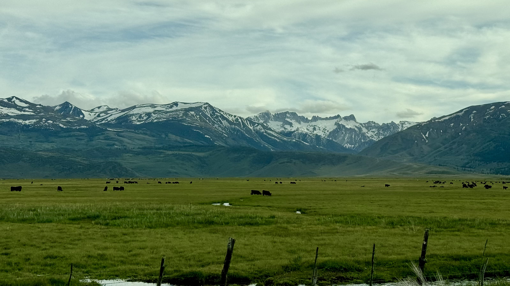
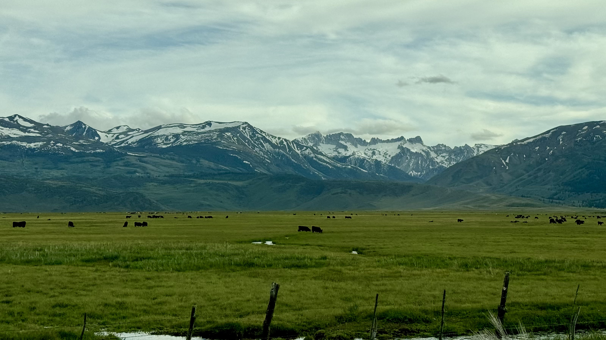

James Ferrare
Hello! I'm a graduate student in the Biophysics PhD Program at Stanford University.
I work in the lab of Dr. Benjamin Good, where my research combines tools from statistical
physics and theoretical population genetics.
My current work focuses on studying the role of recombination in adapting microbial populations.
Many microbes can exchange genetic material through a process known as horizontal gene transfer.
We are interested in a simple question: at what rates does HGT appreciably affect evolutionary dynamics?
Check out our paper here.
Prior to Stanford, I studied international development, mathematics, and physics at Tulane
University. I spent time in Haiti and Paraguay researching chronic disease and energy poverty.
Outside of science, I love to backpack and explore the Bay Area.
Email: jferrare at stanford.edu | Bluesky: jferrare@bsky.social


 
